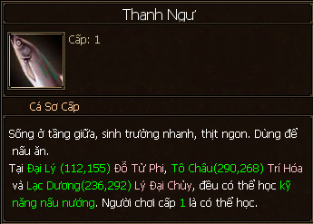
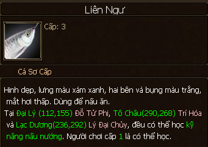
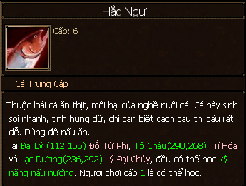
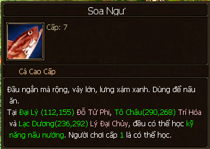
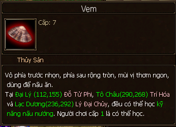
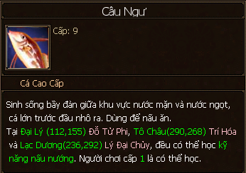
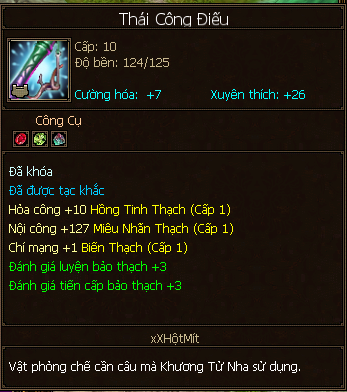
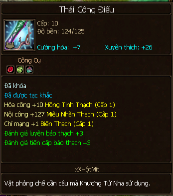

Câu Cá¶
Câu Cá mang lại nguyên liệu cho nghề nấu nướng, cũng như có cơ hội thấp được 2 vật phẩm là tơ tuyến và nhiễm tễ dùng để chế thời trang bằng nghề may mặc.
Câu Cá không tốn tinh lực mà chỉ tốn thời gian ^^.
Mua cần câu sơ cấp trong tiệm tạp hóa là đã có thể ra bờ sông, bờ suối ở các bản đồ ngồi câu cá rồi!
Học Nghề¶
Có thể học ở các thành thị chính (chữ Ngư trên bản đồ) và nâng cấp về sau trong bang hội:
Đại Lý: NPC Mục Tử Lăng (104, 155).
Lạc Dương: NPC Khương Ngư (207, 184).
Tô Châu: NPC Tưởng Bình (238, 77).
Lâu Lan: NPC Diệp Hàn (89, 89).
Thăng Cấp¶
Câu cá cho đủ điểm thành thạo của cấp hiện tại và liên hệ NPC để thăng cấp.
Cấp 1 - 5: thăng cấp tại NPC dạy câu cá ở các thành chính, tiêu tốn vàng và kinh nghiệm.
Cấp 5 - 10: thăng cấp tại NPC Mộc Dịch trong thành thị bang hội (49, 92; chữ Thương trên bản đồ), tiêu tốn vàng, kinh nghiệm, điểm cống hiến bang.
Phân Bố¶
Cấp kỹ năng |
Bản đồ |
Vật phẩm chính |
Vật phẩm khác |
|---|---|---|---|
1 |
Vô Lượng Sơn Kiếm Các Đôn Hoàng Kính Hồ Tung Sơn Thái Hồ |
Thảo Ngư 
Thanh Ngư (Cá Trắm)  |
|
2 |
Tây Hồ |
Tức Ngư 
Tiễn Ngư 
|
|
3 |
Nhĩ Hải |
Liên Ngư (Cá Mè) Lư Ngư (Cá Sạo) 
|
|
4 |
Nhạn Nam |
Bình Ngư 
Biển Đầu Ngư 
|
Tôm Hùm 
|
5 |
Long Tuyền |
Thiện Ngư 
Đầu Lực Ngư 
|
Cua Biển 
|
6 |
Thương Sơn |
Hắc Ngư Thu Đao Ngư 
|
Nghêu 
|
7 |
Nhạn Bắc |
Đấu Ngư 
Soa Ngư  |
Vẹm  |
8 |
Võ Di |
Xương Ngư 
Quang Bối Ngư 
|
|
9 |
Thạch Lâm |
Ngân Ngư 
Câu Ngư  |
|
10 |
Thảo Nguyên |
Khuê Ngư Bài Kỳ Ngư |
Kinh Nghiệm¶
Dùng 1 Bí Ngân cấp 1 và kỹ năng đúc để chế tạo cần câu cao cấp Thái Công Điếu (công thức đồ tường mua tại NPC dạy Đúc - Luyện Kim) để khi câu cá, nhân vật rơi vào trạng thái miễn dịch, sẽ tránh được quấy rầy của quái vật và các người chơi khác đánh vào.
 

Có thể mua thêm mồi câu trong tiệm tạp hóa, giúp tăng tốc độ câu cá trong một khoảng thời gian.
LingYun đã ghi chép từ rất lâu nhưng hôm nay 18:53 29/7/2018 bổ sung hình ảnh của hầu hết các loại cá cũng như thông tin thêm về cần câu Thái Công Điếu